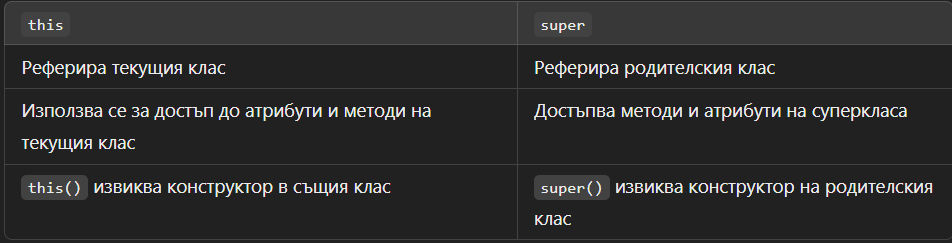
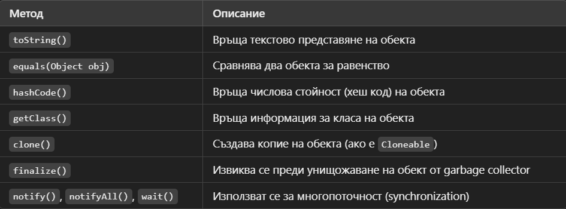

Упражнение № 3
ООП (част 1)
- Принципи на ООП:
- абстракция
- капсулация
- наследяване
- полиморфизъм
- Наследяване на класове:
- Не е възможно множествено наследяване с класове в Java
(един клас може да има само един клас-родител - single inheritance).
Йерархия от класове и преизползване на код.
- Ключови думи:
- extends
-
Използва се за наследяване между класове.
Това означава, че един клас (подклас) може да наследи характеристиките и поведението (атрибути и методи) на друг клас (родителски клас или суперклас).
📌 Основна идея: Подкласът разширява (extends) родителския клас, като добавя нови или променя съществуващи методи.
- super
-
Ключовата дума super позволява на подклас да извиква конструкторите и методите на родителския клас.
- this
-
this реферира текущия обект в класа
- Позволява method chaining, като връща текущия обект
- this() извиква друг конструктор в същия клас
Разлика между this и super

- Object
- 📌 Object е родителският клас на всички класове в Java.
- 📌 Всички класове автоматично наследяват Object.
- 📌 Това осигурява основни методи, които могат да бъдат предефинирани.
Основни методи в Object

- Капсулация:
- Скриване на детайлите на класовете, посредством модификатори за достъп.
- Модификатори за достъп:
- public
- private
- protected
- package
- default
- Абстракция:
- Игнорираме детайлите и виждаме само това което ни интересува.
- Полиморфизъм:
- Дефинира как се работи по еднакъв начин с различни обекти, които дефинират
специфична имплементация на абстрактно поведение (override и overload).
- Пренаписване на методи (Override):
- Отбелязва се с анотация @Override преди дефиницията на метода.
Наследените от базовия (родителски) клас методи могат да се пренаписват.
Това означава да се подмени имплементацията, като оригиналният код от базовия
клас се игнорира за сметка на пренаписания нов код. В това се изразява, така нареченият, полиморфизъм.
- Варианти на методи (Overload):
- Когато декларираме един метод, чието име съвпада с името на друг метод,
но сигнатурите на двата метода са различни по списъка на параметрите (броят или подредбата им),
казваме че имаме различни варианти на този метод (overload); Пример за overload са конструкторите на класовете.